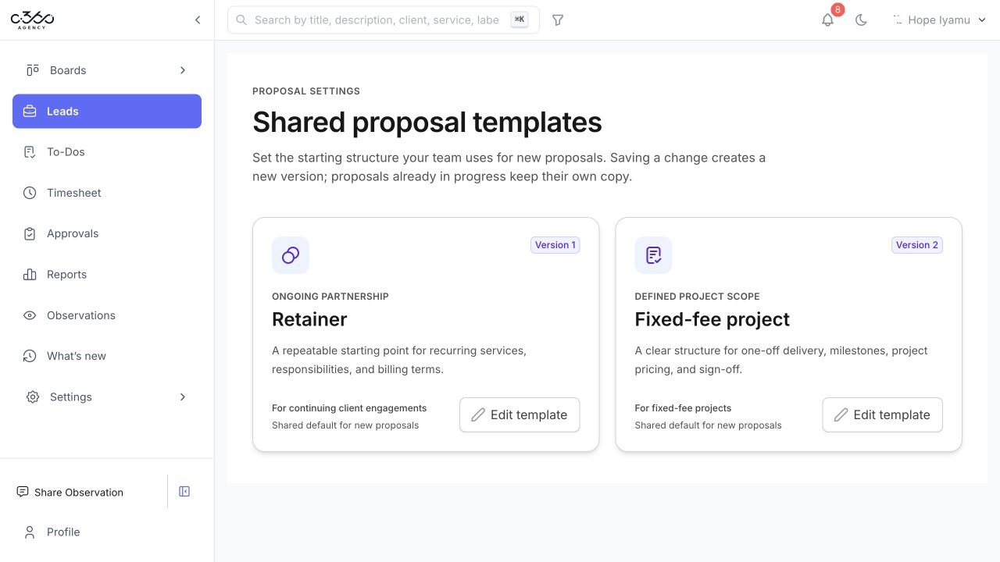

From client brief
to signed proposal.
Contributing to the proposal and agreement workflows inside an agency operations platform, from saved discovery details to a document people can review and sign.
- My role
- Software Engineer
- Context
- Team contribution · ESA
- Platform
- Web · Applied AI
Inside the product
A shared starting point.
Room to make it your own.
Reusable templates give new proposals a consistent structure. The document workspace brings section controls and formatting tools alongside the page being edited.

Versioned starting points for ongoing retainers and fixed-fee projects.

Template settings and document editing in one workspace. Select either screenshot to view it at full size.
Actual application screenshots · Generic shared templates · No client information shown
My contribution
Making each step
work together.
- 01
AI-assisted proposal drafting
Improved proposal narratives and generation flows that use saved discovery details and approved scope. Worked on keeping saved commercial details aligned with the draft as inputs change.
- 02
Editing & reusable templates
Contributed to the proposal editor, shared templates, and document layout. Improved editor sizing, page references, and the experience of reviewing and updating agreement wording.
- 03
Agreement signing
Improved signing reliability, including either-order signing, signature progress display, and recorded signer evidence across proposal and uploaded-agreement flows.
Engineering focus
Keep the draft
tied to the facts.
AI-assisted writing sits inside a larger product workflow. Source context, saved edits, document versions, and signing state all matter. My work focused on those connections and the user experience around them.
Next.js · TypeScript · Supabase · Applied AI
Want to talk through the work?
Get in touch for a conversation about my contribution.